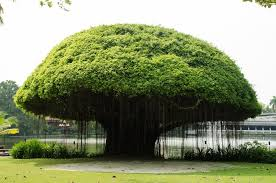

National Tree
- Name : Banyan
- Scientific Name : Ficus benghalensis
- Adopted in : 1950
- Found in : Native to Indian Subcontinent
- Conservation Status : Not-threatened
- Type : Figs
- Dimensions : 10-25 m in height, branch span upto 100 m
The national tree of a country is one of the symbols of pride that is integral to the nation’s identity. To be considered as such, the tree must hold tremendous cultural significance that echoes through the country’s psyche. Being native to that country adds to the privileged status of the tree to be considered as a national symbol. The national tree is an instrument of projecting certain philosophical or spiritual values, which reside at the core of the country’s heritage.
The national tree of India is the Banyan tree, designated formally as Ficus benghalensis. The tree is revered as sacred in Hindu philosophy. It is often a focal point of human establishment owing to its expansive form and shade provided. The tree is often symbol of the fabled ‘Kalpa Vriksha’ or the ‘Tree of Wish Fullfillment’ as it is associated with longevity and has important medicinal properties. The very size of the banyan tree makes it a habitat for a large number of creatures. For centuries the banyan tree has been a central point for the village communities of India. The banyan tree is massive not only from outside but it also sends new shoots from its roots, making the tree a tangle of branches, roots and trunks. The banyan tree towers magnificently over its neighbors and has the widest reaching roots of all known trees, covering several acres. The life of banyan tree is very long and is thought of as an immortal tree.
Scientific Classification
- Kingdom : Plantae
- Division : Magnoliophyta
- Class : Magnoliopsida
- Order : Urticales
- Family : Moraceae
- Genus : Ficus
- Species : Ficus benghalensis
Distribution
Banyan trees are found all over tropical and sub-tropical parts of India, Pakistan and Bangladesh. They represent the largest trees in the world by canopy coverage. They occur in forest, rural as well as urban areas of the country. They often use the branches of big trees or fissures within rocks as support, ultimately taking over by destroying the supporting host. In urban areas they grow on the sides of buildings with the roots penetrating the walls and are called stranglers.
The largest banyan tree in India resides at the Indian Botanical Garden in Shibpur, Howrah in West Bengal. It is around 25 m tall and the canopy cover is around 420 m with over 2000 aerial roots.
Description
Banyan trees are one of the largest trees in the world and grow up to 20-25 m with branches spreading up to 100 m. it has a massive trunk that has smooth greyish brown bark and is fluted. They have very powerful roots that can penetrate very hard surfaces like concrete and even stones sometimes. Older banyan trees are characterized by emergence of aerial prop roots that are thin and fibrous when new, but develop into thick branchlike appearance once they are old and firmly rooted onto the soil. These aerial prop roots offer support to the huge canopy of the tree. The banyan tree generally grows around an existing tree for initial support and drives it roots within it. As the banyan tree matures, the mesh of roots exerts tremendous pressure on the support tree, it eventually dies and the remains rot away leaving a hollow central column inside the main tree trunk. Leaves are thick and stout with small petioles. The leaf buds are covered by two lateral scales which fall off when the leaf matures. The leaves are glabrous on the upper surface and covered in small, fine, stiff hairs on the underside. Shape of the leaf lamina is coriaceous, ovate or orb ovate to elliptic. Dimensions of the leaves are about 10-20 cm in length and 8-15 cm in breadth. The flowers grow within a special type of inflorescence called Hypanthodium that is characteristic of Fig family trees. It is sort of a receptacle which encloses both the male and the female flowers with an opening on top known as the ostioles. The fruits of the banyan trees are types of figs that are globose to depressed-globose, 15-2.5 cm in diameter and pinkish-red in color, with some external hairs present.
Propagation and Cultivation
The banyan tree is propagated through small birds which ingest the figs and excrete the undigested seeds. The tree begins its life as an epiphyte and often uses other mature trees as hosts. Banyan tree is propagated primarily by root tip cuttings or the eye cuttings. Initially they demand high moisture content, but once established, these trees are drought resistant. The plant may be grown indoors in a much smaller scale by a special method known as the Bonsai.
 +91 9917078188
+91 9917078188 mohitpratap51@gmail.com
mohitpratap51@gmail.com www.IndianCulture.com
www.IndianCulture.com